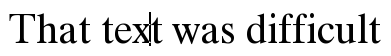
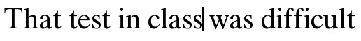

The IDLgrTextEdit:: Delete procedure removes text from a string at the current cursor position. If text is selected, the selection is deleted and the selection length is reset to zero.
If no text is selected, a single character is deleted to the left of the cursor unless the AFTER keyword is used.
Obj ->[ IDLgrTextEdit ::]DELETE [ , / AFTER ] [, TEXT = variable ]
None.
Set this keyword to delete the character after (to the right of) the cursor (as the Delete key does). By default, the Delete method deletes the character before (to the left of) the cursor (as the Backspace key does).
Set this keyword equal to a named variable that will contain the characters that were removed from the string.
The following example illustrates several IDLgrTextEdit procedures, including DELETE. Copy and paste the following sections to the IDL command line or click on them from the online help to run them in IDL.
; Create a window, view, and model
oWindow = OBJ_NEW('IDLgrWindow', RETAIN=2)
oView = Obj_new('idlgrview')
oModel = OBJ_NEW('IDLgrModel')
oView->Add, oModel
; Create the initial line of text and text location
oText = obj_new('idlgrtextedit', 'That text was difficult', $
FONT=oFont, LOCATIONS=[-0.8,0])
oModel->Add, oText
; Select the location to draw the cursor
oText->SetProperty, SELECTION_START=8, /DRAW_CURSOR
; Draw the window
oWindow->Draw, oView
The view should look like this:

The next part deletes the “x” and inserts an “s” in its place:
; Delete the character to the left of the cursor
oText->Delete, TEXT=DeleteChar
; Insert an 's' to change the word to 'test'
oText->Insert, 's'
oWindow->Draw, oView
The following code moves the cursor to the correct position to add more text:
; Move the cursor one character to the end of the word
oText->MoveCursor, oWindow, DIRECTION=1
; Add more text
oText->Insert, ' in class'
oWindow->Draw, oView
The view should now look like the following:

Finally, destroy the IDLgrWindow, and IDLgrView objects before we proceed:
OBJ_DESTROY, [oWindow, oView, oFont]
|
7.0.6 |
Introduced |